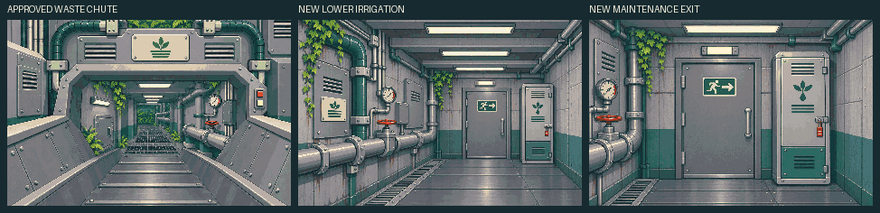
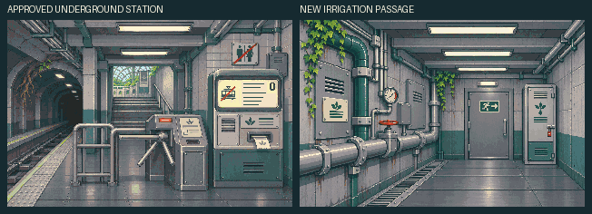
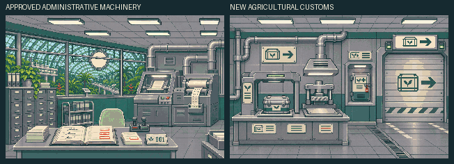
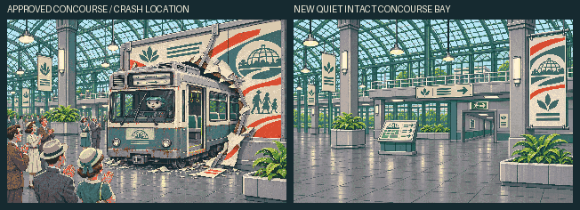

The Acceptable Error / Chapter2 / Batch5 / November17,2026
Irrigation and exits. Five distinct places to leave the Park.
Five generated candidates · Art Director review pending
Batch4 is finally owner-approved and registered. All91 selected public-art hashes have been verified. These five new candidates remain generated and unselected; all prior approved pixels are unchanged.
View
Nearest-neighbor PNGs · full-size images scroll · no fractional scaling
A–E / actual generated artwork
Five irrigation and exit environments
Every game candidate is opaque RGB314×206 using the existing64-color palette. Every enlarged scene preview is exact1256×824. Detailed generation sources are preserved separately. The three treatment containers remain closed; their later Focus A contents are not part of these main scenes.
The initial cargo inspection checkpoint: sealed certified cargo, idle scanner/press/plate, shipment gate and a closed treatment dispenser in its own wall alcove.
The shared public-concourse destination: a quiet intact bay of the approved Exposition architecture, without the tram, collision or branch-specific evidence.
The service passage and its closer exit share the same door/locker. Public, maintenance and cargo exits retain distinct architecture and treatment containers. The new concourse is a quiet intact bay, not an edit or repair of the approved crash illustration.

Approved Waste Chute → new Lower Irrigation → new Maintenance Exit

Approved underground station → new irrigation passage
Approved Control Tower → new public-side exit → new concourse

Approved administrative machinery → new cargo checkpoint

Approved concourse crash location → new quiet intact concourse bay
Evidence / provenance / handoff
Review findings and technical checks
No dithering, crop, padding or local pixel repainting. Source signage already uses pictograms and deliberate graphic rules. Native texture metrics do not establish creative approval.
Gameplay handoff: use the native PNGs and integer nearest-neighbor display with smoothing disabled. No production paths or gameplay integration are assigned. Inventory/Focus dimensions, death-screen records and authored story content remain unchanged.